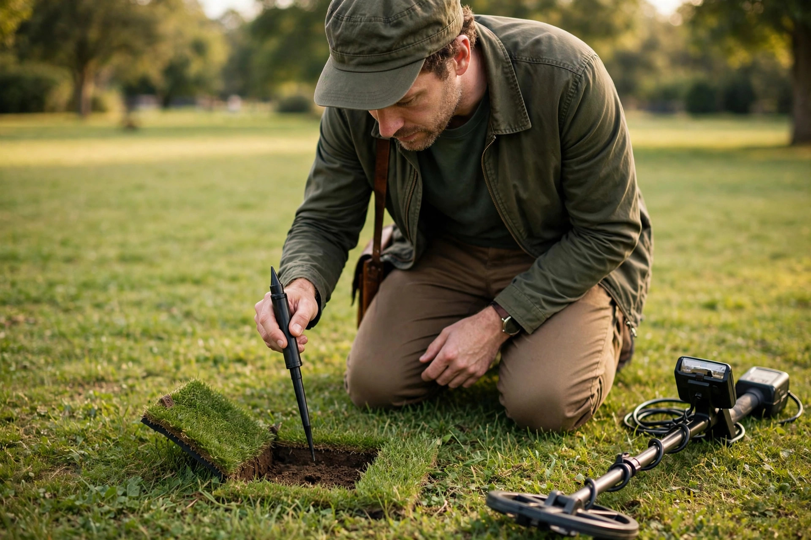

Pinpointing and digging a clean plug

Getting a good signal is the exciting half of metal detecting. The other half — getting that target out of the ground quickly, undamaged, and without leaving a scar behind — is a skill of its own, and it is the half that decides whether you get invited back. Beginners tend to dig holes that are too big because they start digging before they know where the target actually is. The fix is a repeatable routine: narrow the target down with the coil, mark the spot, cut a small hinged plug, check in a fixed order, and repair as you go. None of it needs extra gear to start, and all of it gets faster with practice.
Step 1: Narrow it down with the coil before you kneel
Do not reach for your digger the moment you hear a promising tone. First, shrink the target area with the coil. The standard method is the cross-sweep, sometimes called the X method: sweep over the target from left to right and note where the signal is loudest, then turn ninety degrees and sweep again. Where the two loudest lines cross is where the target sits. A retailer recovery guide from Bill Jackson's describes the same sequence, and it is the foundation everything else builds on.
Two refinements make the cross-sweep honest. First, coils do not always pinpoint exactly on their centre, so after turning ninety degrees you may need to shift the coil an inch or two sideways to find the peak again — that shift is normal, not a mistake. Second, learn the coil-edge check for shallow targets: wiggle the coil slowly backward toward you while listening, and note the moment the signal drops away. The target is usually right at the front edge of the coil at that moment. If your machine has a built-in pinpoint mode, use it as a confirmation: its pitch and signal-strength reading peak when the coil centre is directly over the target.
The goal of all three is the same — get the target area down to a circle of roughly two inches before anything cuts the ground. A small, accurate dig starts here, not with the digger.
Step 2: Mark the spot so you cannot lose it
Here is a beginner failure nobody warns about: you form a perfect crosshair in your mind, kneel down, look away to grab your tools — and the spot is gone. Grass all looks the same from kneeling height. The countermeasure used by experienced hunters is simple: keep your eyes on the spot while you kneel, and put a finger or the tip of your boot directly on it before reaching for anything. Only then pick up your digger.
If you carry a handheld pinpointer, run it over the surface before you cut anything. Loud, obviously shallow targets sometimes sit right at the surface, and a pinpointer sweep can find them in seconds. Those targets can often be flipped out with the tip of a digger — no plug needed at all. Skipping that check means digging a full plug for a coin that was lying in the grass roots.
Step 3: Cut a hinged plug, not a hole
On turf, the plug method is the standard for a reason. Instead of digging a round hole, cut three sides of a square or a U shape, leaving the fourth side uncut. That uncut side is a hinge: fold the plug of turf and soil back on it like a trapdoor. The U-shaped cut is the version most beginner guides describe, because the plug stays attached to its roots, stays alive, and folds back into exactly the hole it came from.
Size the plug to the job. Once pinpointing is accurate, an experienced technique write-up puts a plug of about six inches across and roughly eight inches deep as sufficient for the large majority of coin-sized targets. Beginners should start a little wider rather than deeper — a wide, shallow plug you can search properly beats a narrow shaft you have to keep enlarging. Cut straight down with the blade vertical so the plug keeps clean edges; angled cuts make tapered plugs that crumble and never sit back flush.
Ground type changes the method, and picking the right one is half of clean recovery:
| Ground | Recovery method | Why |
|---|---|---|
| Mown turf (parks, lawns) | Hinged plug, three-sided cut | Roots stay attached, turf survives, repair is invisible |
| Dry sand (beach) | Scoop or trowel, no plug | Sand cannot hold a plug shape; sift and level instead |
| Woodchip (tot lots) | Hand or trowel dig | Loose fill moves freely; rake it back level when done |
| Loose garden soil | Small plug or slit | Soil crumbles; work from a ground cloth so every spoonful goes back |
Whatever the ground, put excavated loose soil on a ground cloth, a finds pouch laid flat, or even a plastic frisbee — never scattered on the grass. Loose soil left on turf is what makes a repair look like an excavation site, and it smothers the grass underneath.
Step 4: Check in a fixed order — plug, hole, walls
With the plug folded back, resist the urge to dig deeper immediately. Check in this order every time:
- Check the plug first. Pass the coil over the upturned plug. If the signal is in the plug, the target is in your hand's reach — break the plug apart gently over your ground cloth until you find it.
- Check the hole second. No signal in the plug? Sweep the open hole. A signal there means the target is deeper or off to one side; only now do you take out more soil, a little at a time, rechecking as you go.
- Check the walls third. If the hole seems empty but the pinpointer complains near one side, the target is in the wall of the hole. This is a classic miss — a common offender is a nail sitting sideways in the wall, but coins end up there too whenever the original pinpoint was an inch off. Widen toward the signal rather than digging deeper.
- Re-scan before you refill. Once the target is out, sweep the hole and the plug one last time. Targets travel in company; a second coin in the same hole is common enough that skipping this check throws finds away.
The pinpointer earns its keep through all four steps: waved over the plug, probed into the hole, run around the walls. It signals when the target is near its tip, which turns a blind excavation into a short search. That is the whole reason recovery with one is quicker and the hole stays smaller.
When the target vanishes
Sooner or later you will lift a plug, re-sweep, and hear nothing — as if the target evaporated. Before you enlarge the hole in a panic, work the checklist. Sweep the plug again slowly, from two directions; a small target can sit in the plug at an angle that hides it from one sweep. Break the plug down over your cloth and check the loose soil in handfuls with the pinpointer. Sweep the hole walls, especially the side your coil was favouring. And widen before you deepen: a target an inch outside your plug is far more likely than one suddenly two inches deeper. A methodical five minutes beats a crater — messy digging is tolerated in rough wilderness ground, but in a park it is the fastest way to get the hobby banned for everyone.
Step 5: Put the ground back like you were never there
Repair is part of the technique, not an afterthought. Tip every spoonful of loose soil back off the cloth into the hole, fold the plug down on its hinge, and press it home with your foot, working around the edges so it sits flush with the surrounding turf. A plug that rocks or sits proud will be scalped by the next mower and die in a neat brown square — the calling card landowners remember. If the soil is dry, the plug benefits from being seated firmly so the roots contact the soil below rather than an air gap.
Then take the trash with you. Every target you dug that turned out to be junk — the bottle cap, the pull tab, the foil wad — goes in your pouch, not back in the hole. It is one less false signal next visit, yours or anyone else's, and leaving a site cleaner than you found it is the habit that keeps parks and permissions open.
What success looks like
A good recovery has a measurable shape. The plug is small — around six inches, not a dinner plate. The target comes out of the plug or the first scoop of soil, not the fifth. Start to finish takes a couple of minutes, not ten. And when you stand up and look down, the test is simple: someone walking past thirty seconds later should not be able to tell where you dug. If they can, the pinpointing step — not the digging — is where to improve next time. Dig carefully and you also protect the find itself: a digger slammed into a coin or a piece of jewelry takes value and history off it in one scrape, which is the other reason the slow, narrow approach wins.
One boundary before the FAQ: none of this technique matters on land you have no right to dig. Plugs belong only where you have permission and where digging is allowed at all — some sites permit detecting but not digging, and that rule always wins over technique. This article is general information about recovery method, not legal advice; check the rules for the specific land before you hunt.
FAQ
How deep should a plug be? Only as deep as the target. For most coin-sized targets found with accurate pinpointing, a plug around eight inches deep is more than enough; take soil out in stages and re-check the plug and hole instead of digging to full depth on speculation.
Is a handheld pinpointer required? No — the cross-sweep, the coil-edge check, and built-in pinpoint mode will locate targets without one. A pinpointer's contribution is speed and smaller holes once you are digging regularly, which is why it is usually the first accessory hunters add.
Why did the signal disappear after I lifted the plug? Usually the target moved with the plug or the loose soil and is presenting at an angle your sweep misses, or it is sitting in the wall of the hole. Re-check the plug from two directions, break it down over a cloth, and probe the walls before widening the hole.
What if there is no grass — just dirt? Use the same check order without the hinge: excavate onto a cloth, check the removed soil first, then the hole, then the walls, and tamp everything back level. The repair standard is the same: no visible trace.